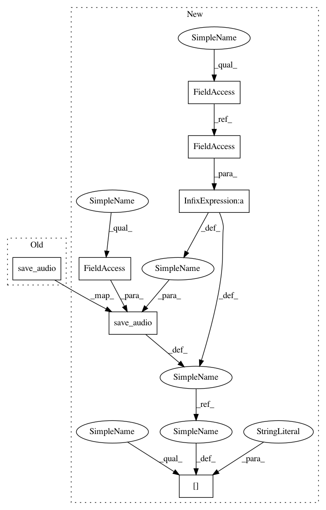

566e089f21fd004943e35652d39ed7becbdfe1ad,open_seq2seq/models/text2speech.py,Text2Speech,maybe_print_logs,#Text2Speech#,203
Before Change
save_audio(predicted_final_spectrogram_sample, self.params["logdir"], step)
elif "mel" in self.get_data_layer().params["output_type"]:
predicted_final_spectrogram_sample = inverse_mel(predicted_final_spectrogram_sample)
save_audio(predicted_final_spectrogram_sample, self.params["logdir"], step)
return {}
def finalize_evaluation(self, results_per_batch, step):
After Change
return loss, [decoder_out, final_spectrogram, attention_mask, target_output, final_sequence_lengths]
def maybe_print_logs(self, input_values, output_values):
self.train_steps += 1
dict_to_log = {}
step = self.train_steps * self.params["print_samples_steps"]
spec, target, _ = input_values["target_tensors"]
predicted_decoder_spectrograms = output_values[0]
predicted_final_spectrograms = output_values[1]
attention_mask = output_values[2]
target_output = output_values[3]
y_sample = spec[0]
target = target[0]
// y_length_sample = y_length[0]
predicted_spectrogram_sample = predicted_decoder_spectrograms[0]
predicted_final_spectrogram_sample = predicted_final_spectrograms[0]
attention_mask_sample = attention_mask[0]
target_output_sample = target_output[0]
audio_length = output_values[4][0]
im_summary = plot_spectrogram_w_target(y_sample, predicted_spectrogram_sample,
predicted_final_spectrogram_sample,
attention_mask_sample,
target_output_sample,
target,
audio_length,
self.params["logdir"], step,
append="train",
save_to_tensorboard = self.save_to_tensorboard)
dict_to_log["image"] = im_summary
predicted_final_spectrogram_sample = predicted_final_spectrogram_sample[:audio_length-1,:]
if "magnitude" in self.get_data_layer().params["output_type"]:
predicted_final_spectrogram_sample = np.exp(predicted_final_spectrogram_sample)
wav_summary = save_audio(predicted_final_spectrogram_sample, self.params["logdir"], step,
save_to_tensorboard = self.save_to_tensorboard)
dict_to_log["audio"] = wav_summary
elif "mel" in self.get_data_layer().params["output_type"]:
predicted_final_spectrogram_sample = inverse_mel(predicted_final_spectrogram_sample)
wav_summary = save_audio(predicted_final_spectrogram_sample, self.params["logdir"], step,
save_to_tensorboard = self.save_to_tensorboard)
dict_to_log["audio"] = wav_summary
if self.save_to_tensorboard:
return dict_to_log
else:
In pattern: SUPERPATTERN
Frequency: 4
Non-data size: 7
Instances
Project Name: NVIDIA/OpenSeq2Seq
Commit Name: 566e089f21fd004943e35652d39ed7becbdfe1ad
Time: 2018-06-21
Author: jasoli@nvidia.com
File Name: open_seq2seq/models/text2speech.py
Class Name: Text2Speech
Method Name: maybe_print_logs
Project Name: NVIDIA/OpenSeq2Seq
Commit Name: 566e089f21fd004943e35652d39ed7becbdfe1ad
Time: 2018-06-21
Author: jasoli@nvidia.com
File Name: open_seq2seq/models/text2speech.py
Class Name: Text2Speech
Method Name: finalize_evaluation
Project Name: NVIDIA/OpenSeq2Seq
Commit Name: 566e089f21fd004943e35652d39ed7becbdfe1ad
Time: 2018-06-21
Author: jasoli@nvidia.com
File Name: open_seq2seq/models/text2speech.py
Class Name: Text2Speech
Method Name: maybe_print_logs